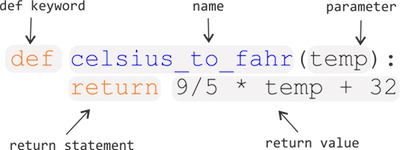

Functions#
In this lesson we introduce functions as a way of making blocks of code for a specific task that are easy to use and re-use in your programs.
What is a function?#
A function is a block of organized, reusable code that can make your programs more effective, easier to read, and simple to manage. You can think functions as little self-contained programs that can perform a specific task that you can use repeatedly in your code. One of the basic principles in good programming is “do not to repeat yourself”. In other words, you should avoid having duplicate lines of code in your scripts. Functions are a good way to avoid such situations and they can save you a lot of time and effort as you don’t need to tell the computer repeatedly what to do every time it does a common task, such as converting temperatures from Fahrenheit to Celsius. During the course we have already used some functions such as the print() command which is actually a built-in function in Python.
Anatomy of a function#
Let’s consider the task from the first lesson when we converted temperatures from Celsius to Fahrenheit. Such an operation is a fairly common task when dealing with temperature data. Thus we might need to repeat such calculations quite often when analysing or comparing weather or climate data between the US and Europe, for example.
Creating a first function#
Let’s define our first function called celsius_to_fahr. Figure 2.4 explains the main elements of a function.
def celsius_to_fahr(temp):
return 9 / 5 * temp + 32

Figure 2.4 An example function with annotation of its important elements.
The function definition opens with the keyword def followed by the name of the function and a list of parameter names in parentheses.
The body of the function — the statements that are executed when it runs — is indented below the definition line.
When we call the function, the values we pass to it are assigned to the corresponding parameter variables so that we can use them inside the function (e.g., the variable temp in this function example).
Inside the function, we use a return statement to define the value that should be given back when the function is used, or called.
Calling a function#
Now let’s try using our function.
Calling our self-defined function is no different from calling any other function such as print().
You need to call it with its name and provide your value(s) as the required parameter(s) inside the parentheses.
Here, we can define a variable freezing_point that is the temperature in degrees Fahrenheit we get when using our function with the temperature 0°C (the temperature at which water freezes). We can then print that value to confirm. We should get a temperature of 32°F.
freezing_point = celsius_to_fahr(0)
print("The freezing point of water in Fahrenheit is:", freezing_point)
We can do the same thing with the boiling point of water in degrees Celsius (100°C). Just like with other functions, we can use our new function directly within something like the print() function to print out the boiling point of water in degrees Fahrenheit.
print("The boiling point of water in Fahrenheit is:", celsius_to_fahr(100))
Creating another function#
Now that we know how to create a function to convert Celsius to Fahrenheit, let’s create another function called kelvins_to_celsius. We can define this just like we did with our celsius_to_fahr() function, noting that the Celsius temperature is just the temperature in Kelvins minus 273.15. Just to avoid confusion this time, let’s call the temperature variable used in the function temp_kelvins.
def kelvins_to_celsius(temp_kelvins):
return temp_kelvins - 273.15
Let’s use it in the same way as the earlier one by defining a new variable absolute_zero that is the Celsius temperature of 0 Kelvins. Note that we can also use the parameter name temp_kelvins when calling the function to explicitly state which variable values is being used. Again, let’s print the result to confirm everything works.
absolute_zero = kelvins_to_celsius(temp_kelvins=0)
print("Absolute zero in Celsius is:", absolute_zero)
Question 2.9#
Isaac Newton developed a scale for measuring temperatures that was a precursor to the modern-day Celsius scale. In his system, water would freeze at 0 °N and boil at 33 °N (°N here indicates degrees Newton, not degrees north :D). Although it is difficult to directly convert between the two scales, if we assume that the increments of temperature change are equal between 0 °N and 33 °N we can come up with a temperature conversion equation between degrees Celsius and degrees Newton:
$$ \begin{equation} \Large T_{\mathrm{Newton}} = T_{\mathrm{Celsius}} * 0.33 \end{equation} $$
You task here is to:
Create a new function called
celsius_to_newtonthatHas one parameter that is the temperature in degrees Celsius to be converted to degrees Newton
Returns the temperature in degrees Newton
# Use this cell to enter your solution.
# Solution
def celsius_to_newton(temp_celsius):
return temp_celsius * 0.33
Functions within a function#
What about converting Kelvins to Fahrenheit?
We could write out a new formula for it, but we don’t need to.
Instead, we can do the conversion using the two functions we have already created and calling those from the function we are now creating. Let’s create a new function kelvins_to_fahr that takes the temperature in Kelvins as the parameter value temp_kelvins and uses our kelvins_to_celsius and celsius_to_fahr functions within the new function to convert temperatures from Kelvins to degrees Fahrenheit.
def kelvins_to_fahr(temp_kelvins):
temp_celsius = kelvins_to_celsius(temp_kelvins)
temp_fahr = celsius_to_fahr(temp_celsius)
return temp_fahr
Now let’s use the function to calculate the temperature of absolute zero in degrees Fahrenheit. We can then print that value to the screen again.
absolute_zero_fahr = kelvins_to_fahr(temp_kelvins=0)
print("Absolute zero in Fahrenheit is:", absolute_zero_fahr)
Functions and variable names#
A common point of confusion for new programmers is understanding how variable names in functions relate to those defined elsewhere in your notebooks. When defining a function, the variable names given in the function definition exist and will only be used when the function is called. That might seem confusing, but as it turns out, this is an excellent feature in Python that can save you from much suffering. Let’s try to understand this by way of an example.
Let us define modified version of our kelvins_to_celsius function where the parameter value is still called temp_kelvins, but we now store the converted temperature as temp_celsius first and return that value.
def kelvins_to_celsius(temp_kelvins):
temp_celsius = temp_kelvins - 273.15
return temp_celsius
So, we have defined our function to accept temp_kelvins as its only parameter, calculate temp_celsius, and return that value.
As you will see below, the variables defined in the function exist only in its namespace.
Let’s confirm that.
temp_kelvins
temp_celsius
Here, in the global namespace we get a NameError when trying to access the variables temp_kelvins or temp_celsius because they have only been defined within the kelvins_to_celsius() function.
Perhaps, however, you are thinking that we have not yet called the function, so that is why we get a NameError. Maybe if we use the function, then these variable values will be defined.
Let’s try that.
kelvins_to_celsius(temp_kelvins=293.15)
temp_kelvins
As you can see temp_kelvins is still not defined in the global namespace, where values such as freezing_point have been defined.
Why does Python work this way?
Well, as it turns out, the benefit of having a separate namespace for functions is that we can define a variable in the global namespace, such as temp_kelvins and not need to worry about its name within a function, or the use of a function changing its value.
Inside the function, the value that is passed will be known as temp_kelvins, but modifying that value will not alter a variable of the same name in the global namespace.
Let’s have a look at another example using a modified kelvins_to_celsius() function we can call kelvins_to_celsius2().
def kelvins_to_celsius2(temperature):
temperature = temperature - 273.15
return temperature
Here, we pass in a value as temperature and modify the value that is passed in before returning it.
This is probably not a good idea in most cases because it could cause confusion, but it is perfectly valid code.
Let’s now define a variable temperature in the global namespace and use our function to modify it.
temperature = 303.15
kelvins_to_celsius2(temperature=temperature)
temperature
As you can see, the value of the variable temperature in the global namespace was set to 303.15 and remains 303.15 after using the kelvins_to_celsius2() function.
Although there is a variable inside that function with the same name as the value in the global namespace, using the function assigns the value of temperature inside the function and manipulates that value only inside the function.
It is important to be aware that it is possible to access variable values that have been defined in the global namespace from within functions, even if the value has not been passed to the function. This is because Python will search for variables defined with a given name first inside the function, and then outside the function (the search domain is known as the variable’s scope). If such a value is found then it can be used by the function, which could be dangerous!
Let’s look at an example of behavior in a function that may be unexpected. Here we can define a third version of the kelvins_to_celsius() function that we can call kelvins_to_celsius3().
def kelvins_to_celsius3(temp):
temp = temperature - 273.15
return temp
kelvins_to_celsius3(273.15)
You were perhaps expecting to see a value of 0 returned by kelvins_to_celsius3(), but that does not occur because temp is assigned temperature - 273.15 in the function.
Although temperature was not passed to kelvins_to_celsius3() it is defined in the global namespace and thus can be used by our example function.
Since temperature = 303.15 we get a value of 30.0 returned when using kelvins_to_celsius3().
Conclusion: Be careful!
For those who are interested, more information about namespaces and variables scopes can be found on the Real Python website.
Documenting functions with docstrings#
A documentation string, or a docstring is a block of text that describes what a specific function, library, or script does and how to use it. Surprise surprise, PEP 8 contains more guidance about documentation strings [1], and docstrings even have their own guide page [2]. Let’s look an an example from our of our functions above.
def kelvins_to_celsius(temp_kelvins):
"""Converts temperature in Kelvins to degrees Celsius."""
return temp_kelvins - 273.15
Here you can see a short bit of text explaining in simple language what this function does. In this case our function is quite simple, but the docstring still helps remove uncertainty about what it can be used to do. So, what can we see in this example?
A docstring is always the first statement in a module or a function.
Docstrings are written using
"""triple double quotation marks""".Short docstrings can be written on a single line [3].
Seems simple enough, right? We can also provide more detailed docstrings, which can be particularly helpful when using functions with multiple parameters. Let’s expand the docstring above to provide more information about this function.
def kelvins_to_celsius(temp_kelvins):
"""
Converts temperature in Kelvins to degrees Celsius.
Parameters
----------
temp_kelvins: <numerical>
Temperature in Kelvins
Returns
-------
<float>
Converted temperature.
"""
return temp_kelvins - 273.15
Here you can now see more information about the expected values for the parameters and what will be returned when using the function. This level of documentation is not needed for every function, but clearly it can be useful, especially when you have multiple parameters. Note here that the suggested format is to have the quotation marks on their own separate lines.